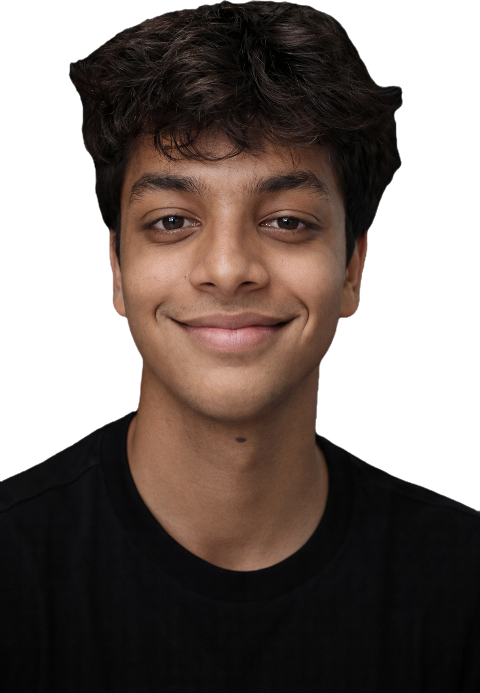

Ranchi → Sahyadri → The World

I grew up learning to sit with things I didn’t understand yet. I still do.
I build systems, perform on stage, and try to make the complex feel human. From Ranchi, shaped by silence, working on things that matter.
“Most people learn in straight lines. I learned under trees.”
I grew up in Ranchi, where the best school in the city had no interest in what its students actually thought. At nine years old, without fear, I left for Sahyadri School (KFI) in Pune — built on the philosophy of Jiddu Krishnamurti, where learning is not a narrow road and growth is not only academic.
Every day in the second term, the whole school assembles on a hill at sunset. We sit on rocks and stay completely quiet for twenty minutes. The objective isn’t to think or reflect — just to observe. This is called Astachal. It is the most important thing I’ve ever been taught, and it wasn’t taught to me. It was just made possible.
When I go back to Ranchi for holidays, I feel the noise of the outside world like a physical thing — people not present in their own lives, constantly rushing toward something without quite knowing what. Sahyadri made me allergic to shallowness. Not because I’m better than the world outside. Because I’ve tasted what slowness feels like.
Currently in Grade 11 at Sahyadri, taking AP Calculus BC, AP Physics C: Mechanics, and AP Computer Science A. Scored 99% on the ICSE board in 2024, with centums in Physics and Biology. Selected for Ashoka University’s Young Scholars Programme (2025) — a competitive residential programme in the Tech, Data & Computer Science track.
I’m interested in how cooperation can be engineered in systems where it doesn’t naturally emerge — especially in game-theoretic environments and AI systems that optimise for the wrong incentives.
Ashoka Young Scholars · April–May 2025
Ten days in Gurgaon. Hands-on projects in MakerSpace Labs — AI, automation, IoT, 3D modelling. Faculty seminars on AI & society, digital privacy, data-driven decision-making. Met Prof. Sudheendra Hangal (Stanford CS), who recommended Thinking Fast and Slow and How to Solve It — two books that reframed how I think about problem-solving.
“Most systems don’t fail because people act irrationally — they fail because rational choices don’t lead to good outcomes.”
Published Research · Polygence · 2024–25
From Game-Theoretic Poker to the Collapse of Trust: Modelling Strategic Behaviour in Multi-Agent Systems
Trust is the most fragile infrastructure in any system. This research gives it mathematics. Using Kuhn Poker as a formal environment, I studied how trust emerges and collapses when eight different types of agents — from pure cooperators to chronic bluffers — interact across repeated games. The question underneath it: what does it actually take to build a reputation when you can’t verify who you’re playing against?
Paper forthcomingResearch conducted through Polygence, mentored by domain experts. The ideas connect directly to live questions in AI safety and multi-agent systems — what happens when AI agents with different objectives interact repeatedly, and whether cooperation is ever stable.
Lifeline — Refugee Communication App
An AI-equipped cross-platform application for people in conflict zones. Built around one question: what does a person actually need in the first hour after everything has been taken from them? Designed communication and resource-access tools for refugees in war-stricken zones. Won Sahyadri’s school Shark Tank. Presented before the entire school assembly.
Game Algorithms Engine
Implementations of minimax with alpha-beta pruning (Connect 4), constraint satisfaction solvers (N-Queens, Mastermind), and adversarial search strategies — each with interactive HTML visualisers and empirical benchmarks. Built to explore how strategic decision-making emerges in constrained systems — and how it breaks.
The most interesting finding: an algorithm’s real-world efficiency depends not on theoretical complexity alone, but on the ratio between the cost of its optimisation strategy and the savings that strategy produces.
Sage — Senior Smartphone App
Instead of teaching older users to navigate smartphones, Sage uses Android’s Accessibility Service API to operate the phone on their behalf. The core insight: technology should adapt to people, not the other way around.
This is not a hobby. Each play was chosen because it had something to say. The stage as a social tool — for ideas that wouldn’t otherwise reach the people who needed to hear them.
The Origin
In 9th grade, I was cast as an old man — partly because my Hindi was strong enough. In one rehearsal, something clicked. I realised the character was exactly like someone I’d spent years watching closely: wise and childish at the same time. I started crying in the middle of a sad scene. My teacher, who was directing, started crying too. That was the day I became the old man of the school.
| Play | Role | Genre | Watch |
|---|---|---|---|
| Vriksha | Lead: Pandya Ji | Dramatic Hindi | YouTube ↗ |
| Anyaay | Lead: The Farmer | Tragic Hindi | — |
| Rehearsal | Bhojpuri Farmer | Comedy Hindi | — |
| Twelve Angry Jurors | Juror #9 | Bilingual Thriller | YouTube ↗ |
Vriksha — The Full Story
A father watches his son turn into a tree. He grieves. The tree produces gold. The family gets rich. They expand their house. The building plans conflict with the tree. They cut it down. Only the granddaughter is human enough to realise what they’ve done.
Half the audience was in tears. The question they went home with: does greed get in the way of human connection?
Twelve Angry Jurors — Full Performance
A bilingual adaptation of Reginald Rose’s courtroom drama. Twelve jurors deliberating a single boy’s life — the only place in theatre where conviction and doubt are the entire stage. I played Juror #9: the old man who sees what nobody else is willing to see.
Lead Editor of Tiwai Tales (school newsletter) and Ninad ’26 (annual magazine). Oversaw content, coordinated student editorial teams, managed design and publication.
Emcee for Farewell ’24. Interviewed Master Manjunath — known for his role as Swami in Malgudi Days — on stage before the entire school. A conversation about craft, memory, and what it means to inhabit a character for decades.
Anchor of the Almabase Committee — led the initiative to build a digital platform connecting Sahyadri alumni with current students.
Treks
Bali Pass, Uttarakhand
16,000 ft · May 2024
Pandav Patthar
12,500 ft · May 2023
Inme Tons, Uttarakhand
April 2023
Community
Lok Biradari Prakalp, Hemalkasa
Volunteered at tribal school
Anandvan Ashram
Teaching visually impaired students forced me to rethink how I explain ideas without relying on visual intuition. It made me more aware of how much of learning is built on assumptions we don’t question.
UNESCO ESD Certification
Hunnarshala Foundation, Bhuj
Sustainable earthen construction
Sports
Handball Team Captain
Basketball Camp Conductor
Mentored younger students
Volleyball & Athletics
School representation
What happens when you design AI systems to cooperate — but cooperation itself becomes the exploit?
I keep thinking about how Vriksha’s audience saw greed on stage and recognised it in themselves. Theatre as a mirror, not a lesson.
Sahyadri taught me that slowness is not the opposite of ambition. It might be the precondition for it.
I spent a year studying how trust breaks down in repeated games — and why cooperation fails even when everyone knows better.
A plain-language version of the research paper
Let’s talk.
I’m always interested in research collaborations, interesting problems, and conversations that don’t have easy answers.